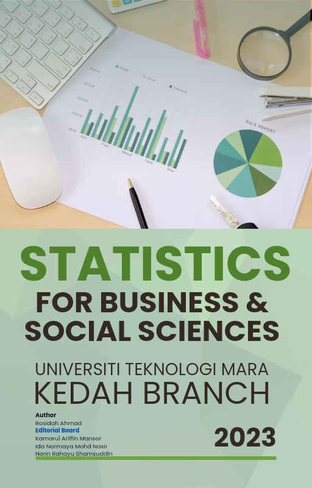

Statistics for Business and Social Sciences
Welcome

Welcome to Statistics for Business and Social Sciences, a comprehensive guide to understanding and harnessing the power of statistics in the context of business and the social sciences. This preface serves as an introduction to the rich and practical content that you are about to embark upon.
In a world increasingly driven by data and information, the ability to make sense of statistics is an invaluable skill. This course has been designed to provide students with the fundamental tools and knowledge necessary to not only understand statistics but also to apply them to real-world problems in business and social sciences. Whether you are a student, a professional, or simply someone interested in the world of data, this course will equip you with the essential skills to navigate the statistical landscape.
Course Information
At the heart of this course lies the commitment to empower students with the ability to:
Describe the concepts involved in solving problems related to statistics for business and social sciences (C2).
Determine the appropriate methods to address statistical problems encountered in business and social sciences (C5).
Demonstrate interpersonal skills through group work related to statistics for business and social sciences (A3).
As you dive into the course, these outcomes will become your guiding beacons, helping you measure your progress and the depth of your understanding.
Course Description
Our journey through the world of statistics will begin by introducing you to the basic and intermediate methods of data analysis. You will explore the realms of descriptive and inferential statistics, which encompass numerical descriptive measures, estimation, hypothesis testing, and various statistical techniques. A significant emphasis is placed on practicality, which will be evident as you delve into the use of statistical software and interpretation of output.
Syllabus Content
The course content is divided into five distinct chapters, each building upon the foundation laid by the preceding one:
Chapter 1: Introduction to Statistics provides the groundwork by defining what statistics is, explaining the types of variables, data, and methods of data collection.
Chapter 2: Descriptive Statistics explores the art of organizing data and calculating various measures of central tendency, variation, skewness, and position.
Chapter 3: Estimation delves into the concept of sampling distribution and interval estimation for means, both for independent and dependent samples.
Chapter 4: Hypothesis Testing equips you with the skills needed to test hypotheses about means and variances in various scenarios, including one-way analysis of variance and testing for independence.
Chapter 5: Bivariate Analysis ventures into the world of relationships between variables, covering correlation, simple linear regression, and the estimation of linear regression using the least squares method.
Each chapter serves as a stepping stone, progressively building your knowledge and competence in the world of statistics.
Throughout your journey, you’ll find numerous examples, exercises, and real-world applications to reinforce your understanding. Remember, this course isn’t just about theory; it’s about practical skills that you can apply to real-life situations.
We hope this course becomes your gateway to the world of statistics, enabling you to approach business and social sciences with newfound confidence and precision. So, fasten your seatbelts, embrace the challenges, and get ready to embark on a statistical adventure that will broaden your horizons and empower you with valuable skills.